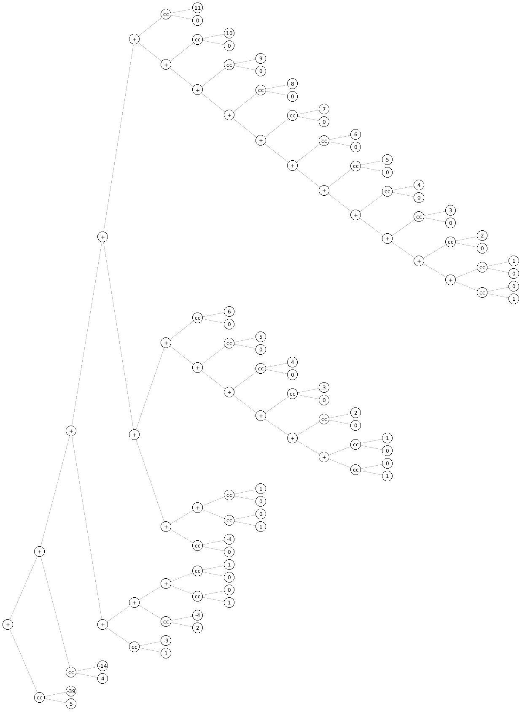

1 Building Abstractions with Procedures
Preamble
First contact with S-expressions
| |||||
57 |
Exercise 1.1
| > 10 | ||||
10 | ||||
| > (+ 5 3 4) | ||||
12 | ||||
| > (- 9 1) | ||||
8 | ||||
| > (/ 6 2) | ||||
3 | ||||
| > (+ (* 2 4) (- 4 6)) | ||||
6 | ||||
| > (define a 3) | ||||
| > (define b (+ a 1)) | ||||
| > (+ a b (* a b)) | ||||
19 | ||||
| > (= a b) | ||||
#f | ||||
| ||||
4 | ||||
| ||||
16 | ||||
| > (+ 2 (if (> b a) b a)) | ||||
6 | ||||
| ||||
16 |
Exercise 1.2
Exercise 1.3
This solution is too explicit, it is better to define a procedure that adds the sum of two squares.
| ||||
| > (sqlar 1 2 3) | ||||
13 |
Exercise 1.4
This procedure adds or subtract the numbers a and b depending on the sign of b:
Exercise 1.5
Normal-order: fully expand and then reduce
Applicative-order: evaluate the arguments and then apply
In applicative-order the expression will enter an infinite loop. In normal-order the answer is zero:
Of course, I have used lazy evaluation in the above code, which can be achieved in scribble/base as follows:
@examples[#:eval my-eval-lazy #:label "Code:" #:no-inset]
with:
(define my-eval-lazy (make-base-eval #:lang 'lazy))
Exercise 1.6
The sqrt procedure can be tested with and without the new-if procedure here:
| ||||
| ||||
| ||||
| ||||
| ||||
| ||||
| ||||
| ||||
| > (sqrt 1e-6) | ||||
0.031260655525445276 |
If we toggle the new-if procedure instead of the if special form the applicative order of Scheme will bite us and we will enter and infinite loop, in particular due to the third parameter.
Exercise 1.7
The usual limitations of floating point arithmetic apply here. Squaring big numbers can result in overflow, adding very small and large numbers lead to loss of precision. For large number the separation between two consecutive numbers is bigger. In addition, the initial absolute tolerance of 0.001 will be obviously insufficient to deal with numbers smaller than it.
|
Exercise 1.8
Implementing the cube root formula.
| ||||
| ||||
| ||||
| ||||
| > (cubert 100) | ||||
4.6440247053200965 |
Exercise 1.9
The first of the processes generated by the following procedures is recursive, the second one is iterative. Both procedures are recursive, though.
(define (+ a b) (if (= a 0) b (inc (+ (dec a) b)))) (define (+ a b) (if (= a 0) b (+ (dec a) (inc b))))
We can apply the substitution model to verify this claim:
(+ 4 5) (inc (+ 3 5)) (inc (inc (+ 2 5))) (inc (inc (inc (+ 1 5)))) (inc (inc (inc (inc (+ 0 5))))) (inc (inc (inc (inc 5)))) (inc (inc (inc 6))) (inc (inc 7)) (inc 8) 9
(+ 4 5) (+ 3 6) (+ 2 7) (+ 1 8) (+ 0 9) 9
Exercise 1.10
| |||||
| > (A 1 10) | |||||
1024 | |||||
| > (A 2 4) | |||||
65536 | |||||
| > (A 3 3) | |||||
65536 |
Here is the process generated by the first call:
(A 1 10) (A 0 (A 1 9)) (A 0 (A 0 (A 1 8))) (A 0 (A 0 (A 0 (A 1 7)))) (A 0 (A 0 (A 0 (A 0 (A 1 6))))) (A 0 (A 0 (A 0 (A 0 (A 0 (A 1 5)))))) (A 0 (A 0 (A 0 (A 0 (A 0 (A 0 (A 1 4))))))) (A 0 (A 0 (A 0 (A 0 (A 0 (A 0 (A 0 (A 1 3)))))))) (A 0 (A 0 (A 0 (A 0 (A 0 (A 0 (A 0 (A 0 (A 1 2))))))))) (A 0 (A 0 (A 0 (A 0 (A 0 (A 0 (A 0 (A 0 (A 0 (A 1 1)))))))))) (A 0 (A 0 (A 0 (A 0 (A 0 (A 0 (A 0 (A 0 (A 0 2))))))))) (A 0 (A 0 (A 0 (A 0 (A 0 (A 0 (A 0 (A 0 4)))))))) (A 0 (A 0 (A 0 (A 0 (A 0 (A 0 (A 0 8))))))) (A 0 (A 0 (A 0 (A 0 (A 0 (A 0 16)))))) (A 0 (A 0 (A 0 (A 0 (A 0 32))))) (A 0 (A 0 (A 0 (A 0 64)))) (A 0 (A 0 (A 0 128))) (A 0 (A 0 256)) (A 0 512) 1024
Mathematical definitions:
(define (f n) (A 0 n))
(define (g n) (A 1 n))
(define (h n) (A 2 n))
First memento
In Section 1.2.2 we can read:
In general, the number of steps required by a tree-recursive process will be proportional to the number of nodes in the tree, while the space required will be proportional to the maximum depth of the tree.
I find the above to be a non-trivial statement. It is true, because in applicative order there will be successive expansions on one branch followed by the corresponding contractions, instead of the full expansion that we would have in normal order. There is a good discussion about it in SO.
Exercise 1.11
I am assuming the following functions will be evaluated on natural numbers, for integers you need to add a check to catch negative values.
| |||||
| > (map f '(0 1 2 5)) | |||||
'(0 1 2 25) |
| ||||||
| ||||||
| > (map f '(0 1 2 5)) | ||||||
'(0 1 2 25) |
Exercise 1.12
|
The above function is zero-based, so the nth argument corresponds to the n - 1 power of the binomial. For example:
| |||
'(1 4 6 4 1) |
Of course, the previous test was neither fancy nor extensive. We can do better, although we are not supposed to use the following tools at the current stage of the book:
| ||||||
| ||||||
|
On a side note, it would be more efficient to build the triangle’s elements using Pascal’s rule:
Exercise 1.13
We will prove by induction that the nth Fibonacci number is given by:
with \phi = \frac{1+\sqrt{5}}{2} and \psi = \frac{1-\sqrt{5}}{2}.
Proof:
Base case:
Induction step:
In the proof, we have exploited the fact that both \phi and \psi are solutions of the quadratic Golden Ratio’s equation. This concludes the first part of the problem. In the second one, we want to prove that:
Proof:
We choose the following definition for the nearest integer function:
In our case:
The above is a true statement, because |\psi^n|<1 and 2<\sqrt{5}. \blacksquare
Exercise 1.14
The number of ways of giving change for certain amount n using m coins of type t_i and corresponding values v(t_i) is the sum of:
Number of ways of giving the change n wihout using coins of type t_i
Number of ways of giving the change n - v(t_i) using all types of coins
| > (define (count-change amount) (cc amount 5)) | ||||||
| ||||||
| ||||||
| > (count-change 11) | ||||||
4 |
Using racket/trace one can get the full backtrace call, but I find it hard to read. I have created manually a sexp that simulates the backtrace, and represent it using pict/tree-layout.
| |||||||||||
| |||||||||||
| |||||||||||
|
| |||||
 |
In applicative order, the order of growth of space is readily found to be \Theta(n). Finding the time complexity of the algorithm is a much more difficult task. A rigorous analysis using generating functions can be found in chapter 7 of Concrete Mathematics. I will proof by induction on m that the number of steps grows as O(n^m), so our hypothesis is:
Proof:
Base case:
This can be easily verified from the largest branch of the tree:
Induction step:
We can expand the recursion tree for the case f(n, m + 1):
So we make \text{floor}(\frac{n}{v(t_{m+1})}) calls to the procedure of order m. The asymptotic behavior of this is:
In the above expression, we have absorbed all multiplicative factors in the constant C, and all lower order terms are ignored. \blacksquare
Exercise 1.15
The following equation provides an elegant way of computing the sinus function. A testimony of the power of trigonometric identities:
The provided code helps to elucidate the solutions of this problem without explicit computation.
| > (define (cube x) (* x x x)) | ||||
| > (define (p x) (- (* 3 x) (* 4 (cube x)))) | ||||
|
The computation of (sine 12.15) will take 5 steps
The number of steps is \Bigl\lceil \log_3 10a \Bigr\rceil = O(\log a). The space order of groth is the same.
Exercise 1.16
The iterative procedure of the exponentiation by squaring can be implemented as follows: